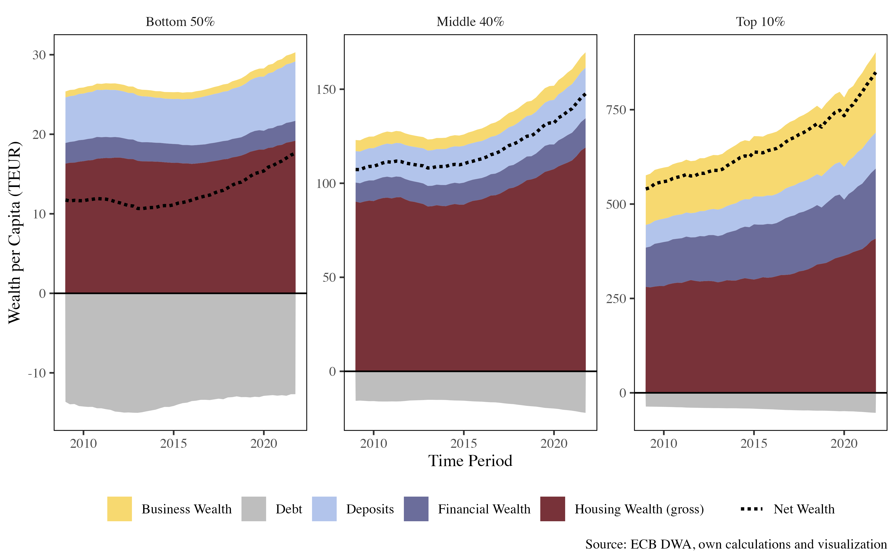
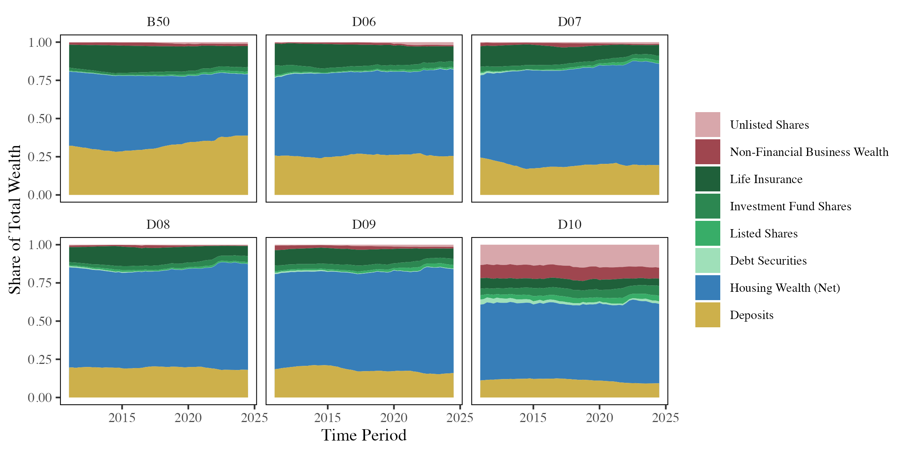
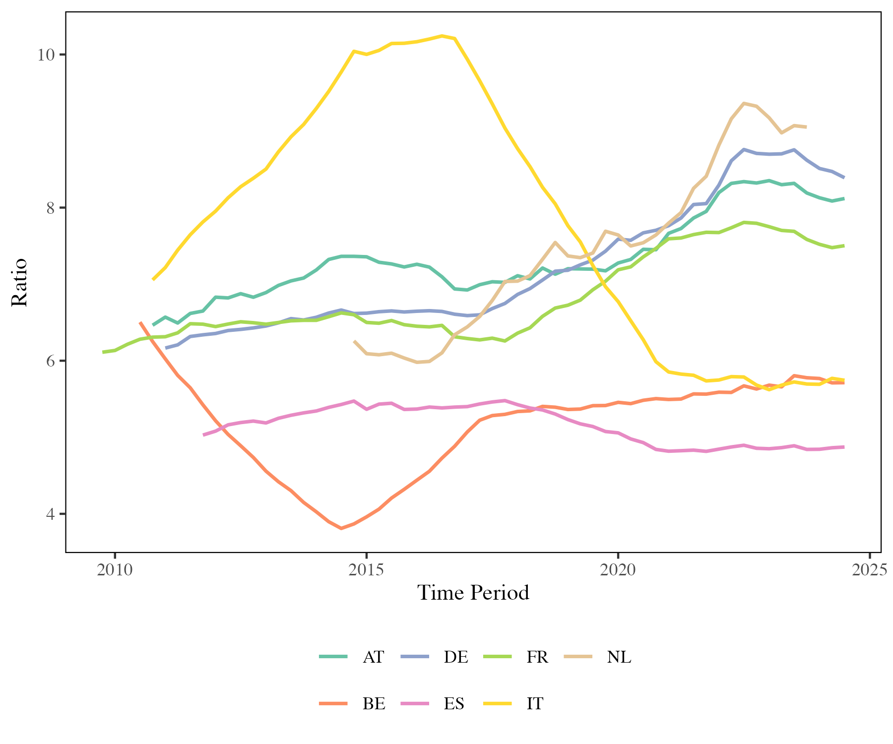

Cementing the Divide? Housing and Wealth Inequality across Europe
Bachelors Thesis Project researching the connection between housing price increases and their effect on wealth inequality across different European countries. Using novel data from the ECB’s Distributional Wealth Accounts (DWA) and a range of statistical methods in R.

the Code for the ongoing project can be found on GitHub. This project is part of my bachelor thesis at the University of Halle-Wittenberg, supervised by prof. Dr. Börner and Hakon Albers.
This project examines how rising housing prices impact wealth inequality, focusing first on Germany and then extending the analysis across Europe. Using the ECB’s Distributional Wealth Accounts (DWA), I apply inequality decomposition techniques and panel regressions to explore whether gains from housing primarily benefit the middle class or the wealthiest households. The goal is to clarify housing’s role as a driver of inequality in different ownership and price-growth contexts.
The project follows the intuition that housing wealth is a significant factor in overall wealth inequality, as it is a major asset for many households. The analysis will consider how different ownership structures and housing price dynamics affect wealth distribution.
The example of Germany shows that housing is the most important asset for the middle class, while the wealthiest households hold a more diversified portfolio, including financial assets and business equity.

First Figures created from the Data already show that the wealth ratio between tenants and owners has been increasing in countries with rising housing prices, indicating that the wealth gap between these groups is widening. In countries with stable or declining housing prices e.g. Spain or Italy, this is less pronounced.

More to follow as the project progresses.
Citation
@online{walk2025,
author = {Walk, Marten},
title = {Cementing the {Divide?} {Housing} and {Wealth} {Inequality}
Across {Europe}},
date = {2025-05-01},
url = {https://martenw.com/projects/inequality/},
langid = {en}
}